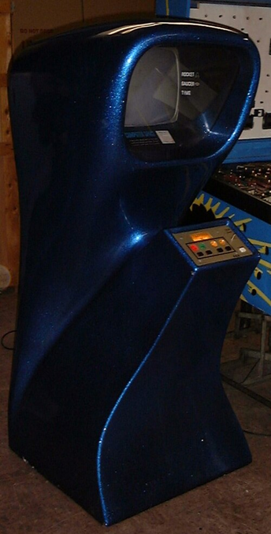
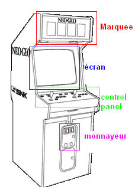

Les jeux d'arcades ont commencé leur apparition en 1971, avec le jeu Computer Space, un jeu de combat spatial similaire à Space Invaders. L'année suivante sortit Pong, un jeu qui allait marquer l'histoire du jeu vidéo.

Computer Space - Le premier jeu d'arcade commercial (1971)
Les contrôles de cette époque étaient principalement électro-mécaniques : lorsqu'on pressait les boutons ou manipules (relativement sensibles à la pression), ces mouvements physiques étaient transmis électriquement vers les processeurs pour être traduits en actions sur l'écran.

Exemple explicatif du fonctionnement d'une borne d'arcade
Les jeux d'arcade étaient surtout populaires au Japon et aux États-Unis, ce qui permit à des compagnies de ces deux régions de développer des machines d'arcade. Deux des acteurs principaux étaient Sega (États-Unis) et Atari (Japon), qui allaient dominer le marché pendant cette décennie.
Bien que les jeux sur ordinateur existaient déjà à cette époque, ils étaient très peu répandus. Posséder un ordinateur était beaucoup plus coûteux qu'aujourd'hui, et la plupart des jeux disponibles n'étaient que de simples clones de jeux d'arcade.
Cette décennie a jeté les bases de l'industrie du jeu vidéo moderne. Les principes établis durant cette période - notamment la monétisation par partie, l'accessibilité au grand public et l'importance de l'expérience de jeu immédiate - continuent d'influencer le design des jeux aujourd'hui.
Développement des premières interfaces électro-mécaniques permettant une interaction physique avec le jeu.
Création d'un marché de divertissement public accessible dans les salles d'arcade à travers le monde.
Établissement du modèle "pay-per-play" qui financerait l'industrie des arcades pendant des décennies.